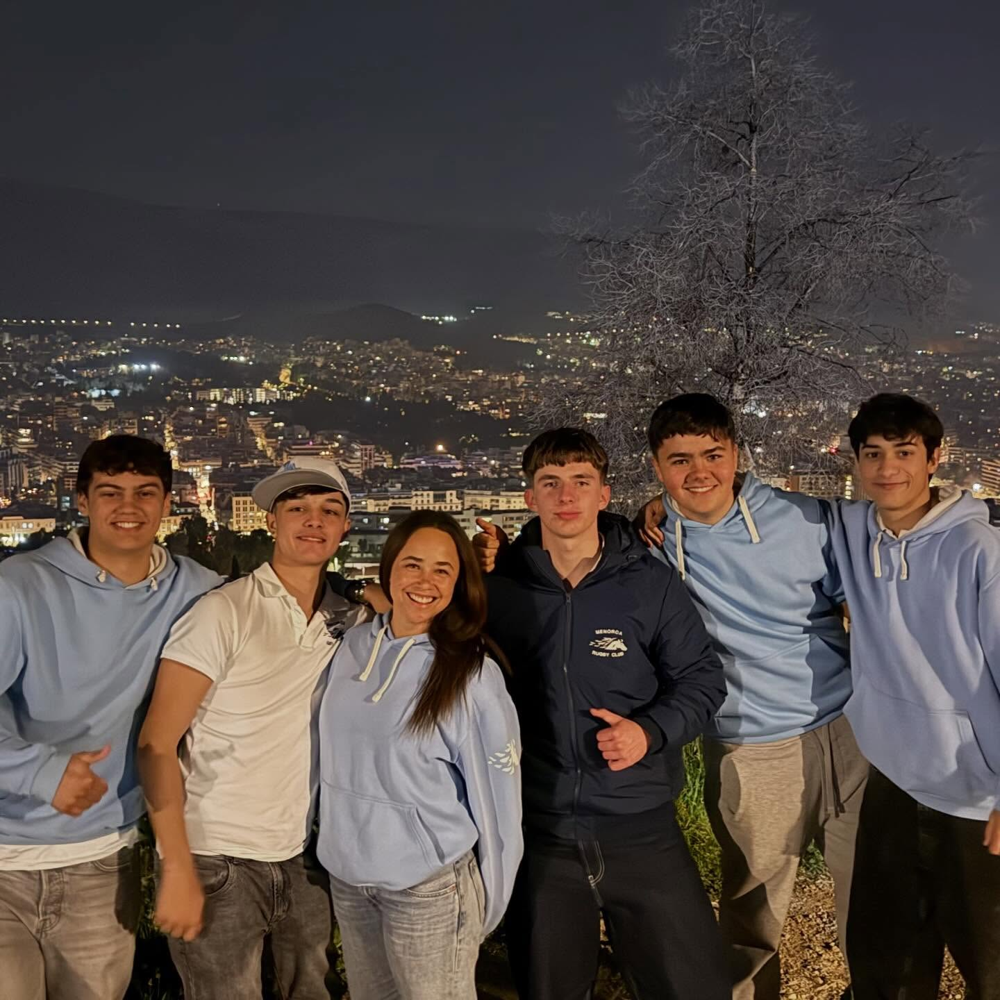
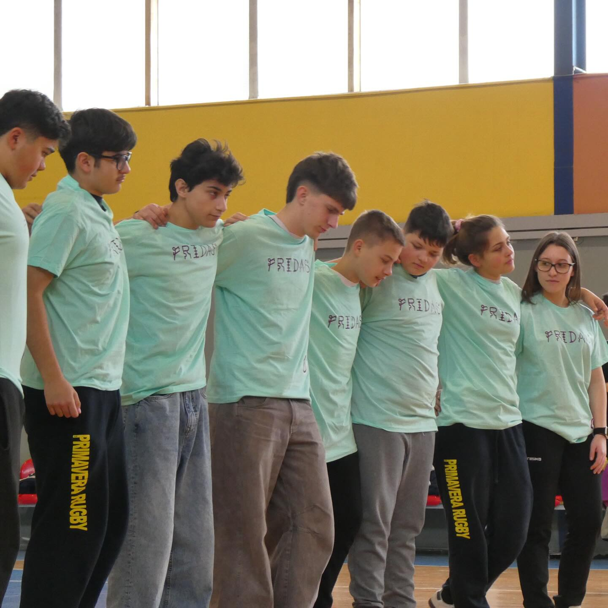
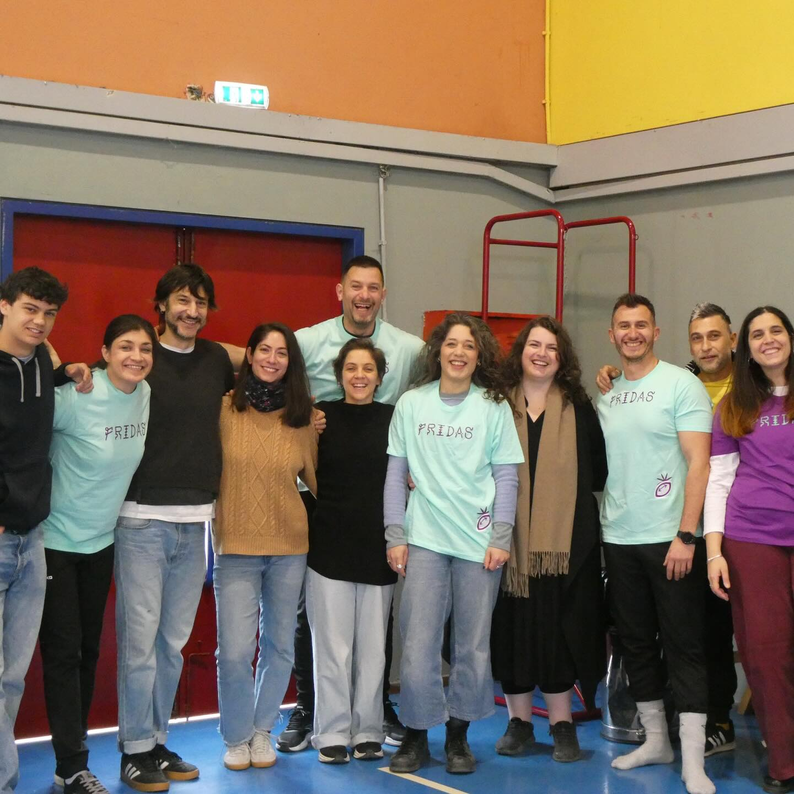
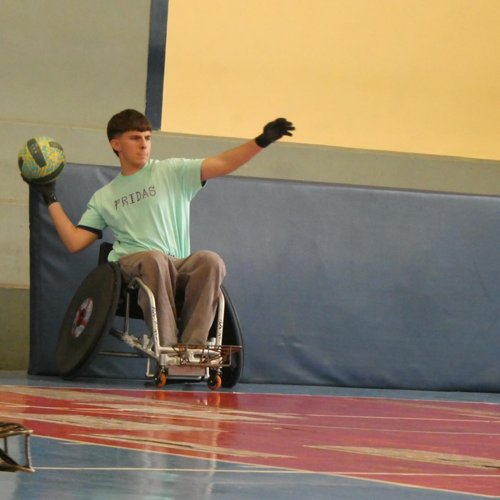
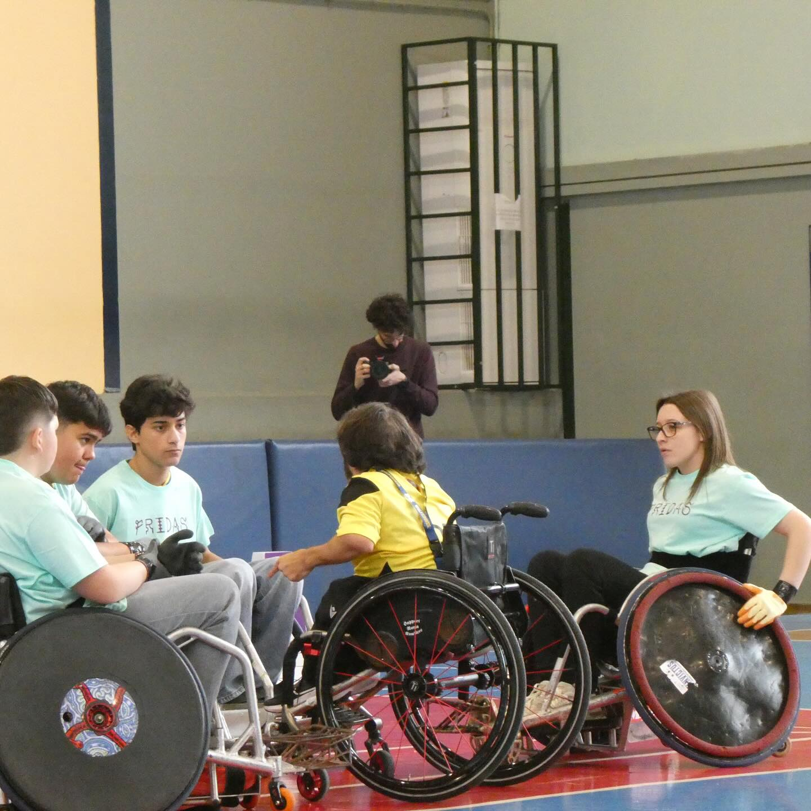
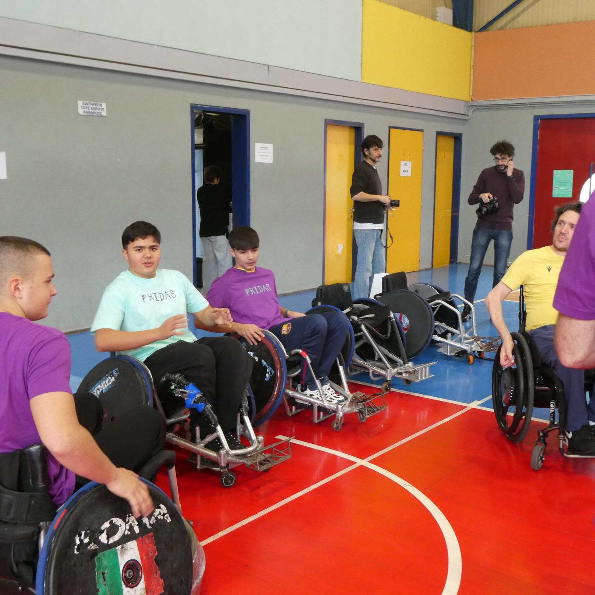
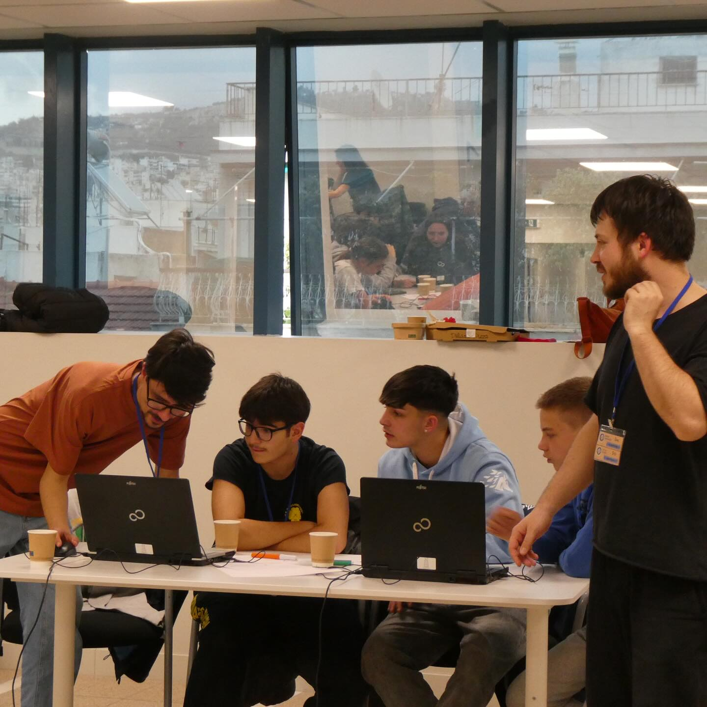
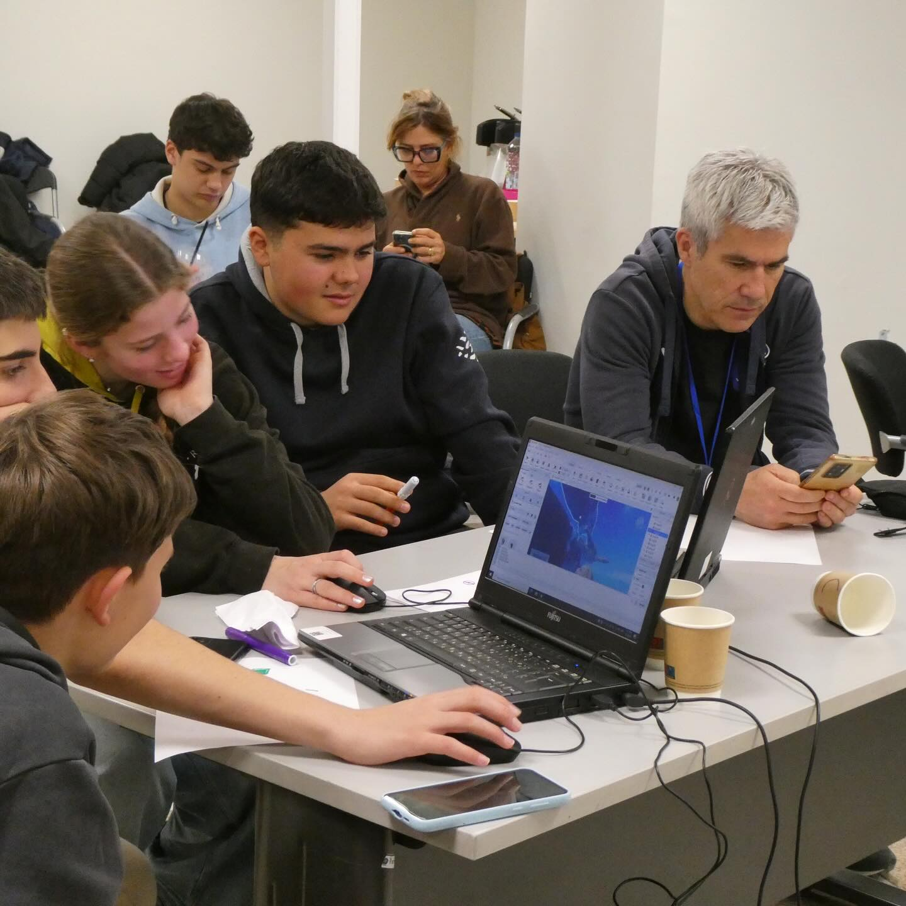
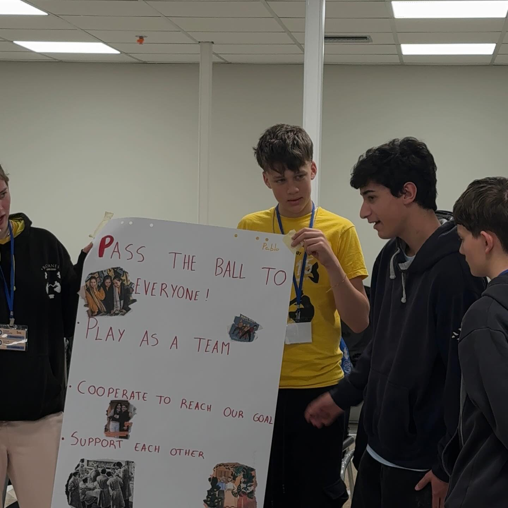

Joel, Hector, Pablo y Cristobal representan al Menorca Rugby en el arranque del proyecto europeo FRIDAS en Atenas
El Menorca Rugby Club ya es oficialmente parte de FRIDAS — Freedom in Rights Identities driven through Arts and Sports, el nuevo proyecto europeo cofinanciado por Erasmus+ Sport (convocatoria ERASMUS-SPORT-2025-SCP) que durante los proximos dos anos (2026–2027) unira rugby, arte e inclusion social en cinco paises europeos. El pistoletazo de salida se dio en Atenas del 16 al 20 de marzo de 2026, con el primer encuentro internacional de todos los socios, y el club menorquin viajo con una delegacion de cuatro jugadores: Joel, Hector, Pablo y Cristobal.
El proyecto esta coordinado por Latitudo Art Projects (Italia) y agrupa a siete organizaciones de cinco paises: U.S. Primavera Rugby y ASD Romanes Wheelchair Rugby (Italia), RK Zagreb (Croacia), la Federacion Bulgara de Rugby, el Menorca Rugby Club (Espana) y Liminal, la entidad griega con sede en Atenas que vela por integrar la perspectiva de diversidad, igualdad y accesibilidad en todas las fases del proyecto. FRIDAS se dirige a jovenes de 12 a 17 anos y se inspira en la figura de Frida Kahlo como simbolo de resiliencia y autodeterminacion.
En el encuentro de Atenas, acogido por Liminal, los socios pusieron en marcha los primeros talleres de capacitacion y lanzaron el primer escenario del videojuego educativo que se desarrollara a lo largo del proyecto — producido por Mekit Studio—, ademas de sentar las bases de los talleres audiovisuales (Monkeys Video Lab) y de la instalacion inmersiva multimedia prevista para 2027. Rugby adaptado, arte participativo y tecnologia se combinan para trabajar salud, inclusion social e igualdad de genero, y para combatir cualquier forma de discriminacion dentro y fuera del campo.
El 31 de marzo, de vuelta en casa, Martina Alibes, una de las responsables del proyecto por parte del Menorca Rugby Club, conto la experiencia en los programas informativos de mediodia de COPE Menorca e IB3 Radio. En la entrevista en Mediodia en COPE en Menorca, presentada por Ignasi Catchot (episodio de casi once minutos emitido a las 13:50 h), Alibes explico los objetivos del proyecto, el papel del club en la red europea y lo que significa para el rugby femenino de la isla formar parte de una iniciativa de este alcance. La misma conversacion se completo en el espacio Al Dia Menorca de IB3 Radio ese mismo dia.
Para un club joven como el Menorca Rugby, formar parte de un consorcio europeo junto a entidades como el rugby adaptado italiano o el RK Zagreb es un paso importante. Que Joel, Hector, Pablo y Cristobal —cuatro chicos de la cantera— hayan sido la primera representacion menorquina en FRIDAS dice mucho de un club que cree en el rugby como herramienta de inclusion y trabajo en equipo.
Despues de Atenas, el calendario de FRIDAS contempla nuevos intercambios en Italia, Croacia, Bulgaria y, por supuesto, Menorca, donde el club sera anfitrion de uno de los encuentros del proyecto. Iremos contando cada parada en esta seccion.
Fotos del encuentro en Atenas








